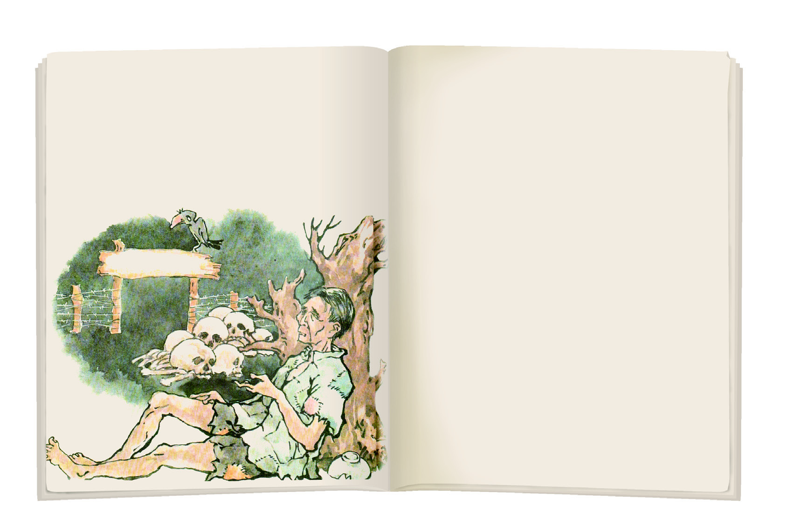
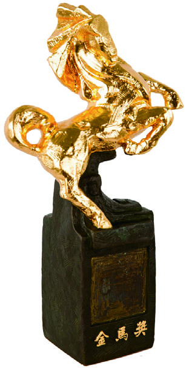
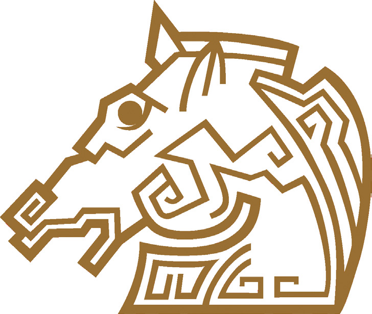
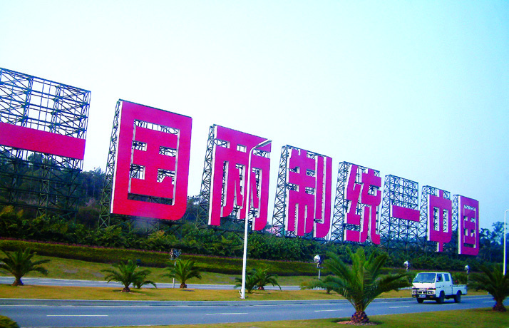

國中歷史 1 下 L05 戰後臺灣的外交與兩岸關係 課堂 CAI 互動輔助教材
自民國 38 年（西元 1949 年）中華民國政府遷臺後，海峽兩岸形成分裂分治的局面。兩岸關係隨著國際局勢與雙方政策的轉變，從早期的軍事對抗，走向後來的政治對峙，再到近年來的經貿與文化交流。
本網頁將帶領你透過互動時間軸、探討兩岸半官方式的談判窗口（陸委會、海基會等），並進行好玩的時光排序與口號配對遊戲。讓我們一起了解這段深深影響臺灣人民生活與國際外交的重要歷史吧！

戰後兩岸對抗時期的前線金門與馬祖地理位置圖民國38年，中華民國政府遷臺，兩岸陷入長期分裂分治。初期中共揚言以武力解放臺灣，並進犯金門。在古寧頭戰役中，國軍奮勇擊退共軍，守住臺灣防線。民國47年爆發八二三砲戰，共軍猛烈砲轟金門，國軍力守金馬前線，此後轉為零星衝突，兩岸未再發生大規模武力對抗。
社會標語常見「消滅朱毛，驅逐俄寇」。
強調一黨專政並以武力手段完成統一。
民國68年，美國與中華人民共和國建交並與中華民國斷交。此後中共對臺政策轉變，改採「和平統戰」，並提出「一國兩制」（即在一個中國原則下，臺灣享有高度自治，但否定中華民國主權，我方不予接受）。
面對中共的統戰策略，中華民國政府採取堅定的防守政策，宣示「三民主義統一中國」，並宣布堅守「不接觸、不談判、不妥協」的「三不政策」。兩岸雖無大規模軍事衝突，但政治立場極度對立，彼此互不往來。
堅持三民主義統一中國，拒絕中共統戰。
改採和平宣傳戰，推動一國兩制統一。

課本插圖：「金馬獎」典故由來，命名旨在鼓勵電影界效法金門馬祖國軍的防衛精神民國76年，蔣經國總統宣布解除戒嚴，並開放民眾赴中國大陸探親，兩岸正式打破隔閡。因涉兩岸公權力，政府於民國80年成立大陸委員會（陸委會）主管兩岸政策，並成立民間性質的海峽交流基金會（海基會）處理涉臺商、糾紛等具體事務。中共方面隨後成立海峽兩岸關係協會（海協會）作為對口。
民國82年，海基會董事長辜振甫與海協會會長汪道涵在新加坡舉行歷史性的辜汪會談，這是兩岸分裂分治後的第一次正式官方授權接觸。隨後兩岸陸續實施「小三通」（民國90年）與「大三通」（民國97年），通郵、通航、通商全方位展開。

課本插圖：大三通的實施讓兩岸的客貨航機、郵件等能夠直接通聯兩岸政治局勢特殊，為處理繁雜的民間交流事務，雙方政府各自成立了「官方主管單位」與「半官方的受託民間團體」：
官方主管單位，負責研擬與規劃兩岸政策
官方授權的民間團體，兩岸交流的第一線談判與服務窗口
官方主管單位，負責對臺工作方針與政策
官方授權的民間團體，與海基會對口協商之窗口

課本插圖：兩岸事務交流的政策溝通與委託民間協商對口機制點擊下方的人物，觀看他在兩岸演變中扮演的角色與生平事蹟：
第 1～5 任總統
第 6～7 任總統
第 8～9 任總統
海基會首任董事長
海協會首任會長
國共內戰失敗後，帶領中華民國政府遷臺。面對兩岸分裂，他在臺灣實行戒嚴，軍事上堅持「反攻大陸」、「光復大陸」，宣傳「消滅朱毛，驅逐俄寇」。在美援支持下穩定臺灣安全，是武力對抗时期的核心領導者。
| 歷史分期 | 時間 | 關係特徵與政策 | 代表性口號標語 | 此時期重要大事與人物 |
|---|---|---|---|---|
| 🔴 武力對抗 | 民國 38～68 年 (1949～1979) |
• 軍事衝突為主，分裂分治 • 臺灣推動鞏固外交 • 美國第七艦隊協防、美援支持 |
• 臺灣：「光復大陸」、「消滅朱毛，驅逐俄寇」 • 中共：「武力解放臺灣」 |
• 古寧頭戰役（國軍獲勝守住臺灣） • 八二三砲戰（國防守衛戰力挺前線） • 重要人物：蔣中正（堅守反共立場） |
| 🟡 政治對峙 | 民國 68～76 年 (1979～1987) |
• 衝突趨緩，改採和平宣傳戰，互不往來 • 臺灣推動彈性外交 • 中共改為「和平統戰」 |
• 臺灣：「三民主義統一中國」、「三不政策」（不接觸、不談判、不妥協） • 中共：「一國兩制」 |
• 美國與中共建交、與我斷交，制定《臺灣關係法》維持非官方往來 • 重要人物：蔣經國（面對中共和平統戰宣示三不政策） |
| 🟢 兩岸交流 | 民國 76 年～現今 (1987～現今) |
• 經貿、文化、社會全面交流 • 臺灣推動務實外交，承認兩岸分裂分治實務 • 成立中介交流窗口協商 |
• 臺灣：開放探親、開展大小三通 • 中共：爭取和平統一，但不承諾放棄使用武力 |
• 民國76年解除戒嚴，開放探親 • 設立官方陸委會/國臺辦與民間授權對口海基會/海協會 • 民國82年舉辦第一次辜汪會談（新加坡） • 民國90年小三通 ➡ 民國97年全面大三通 • 重要人物：李登輝、辜振甫、汪道涵 |
請將下方的歷史事件卡片，拖曳（或點選配對）到上方正確的年代空格中！每題 4 分，錯一個扣 5 分。
拖曳（或點選配對）左邊的標語晶片，投入右邊正確的歷史分期盒中！每題 4 分，錯一個扣 5 分。
點擊卡片翻開，找出「人物/機構照片」與「正確生平/職能說明」的配對！每配對成功一組 10 分。